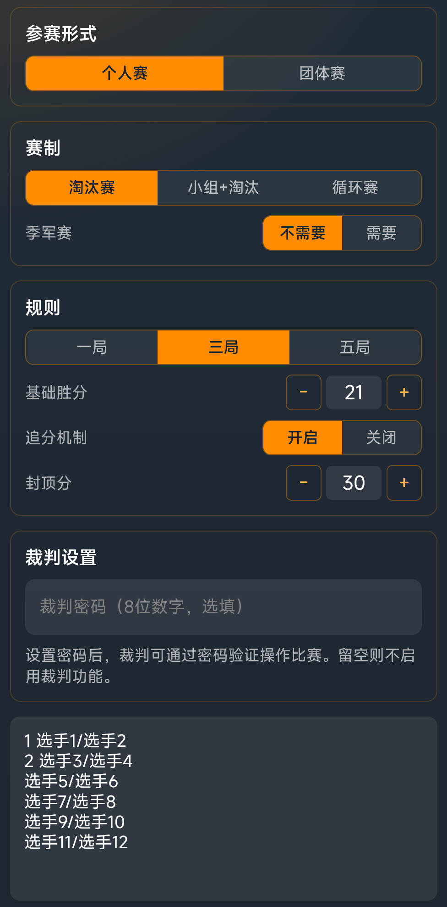
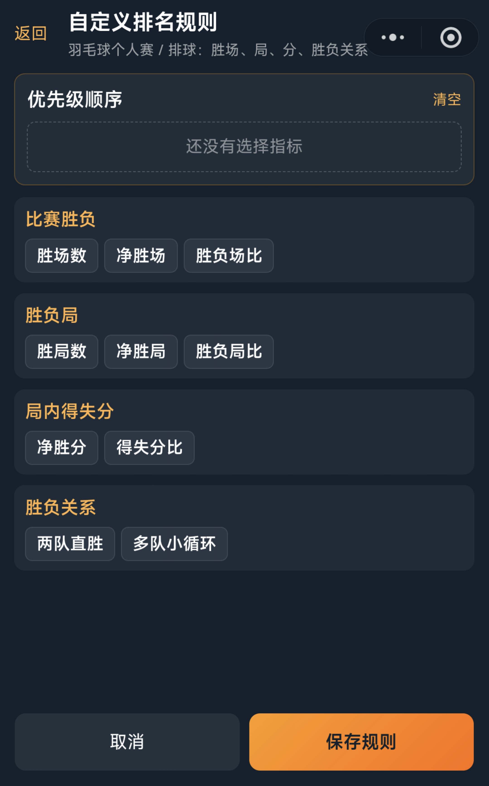
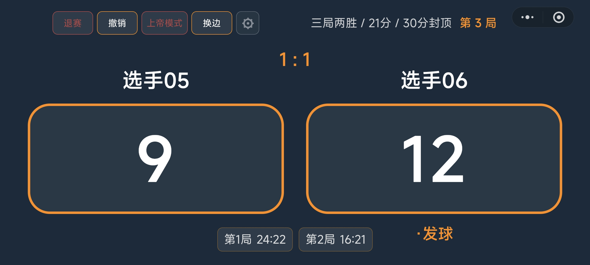
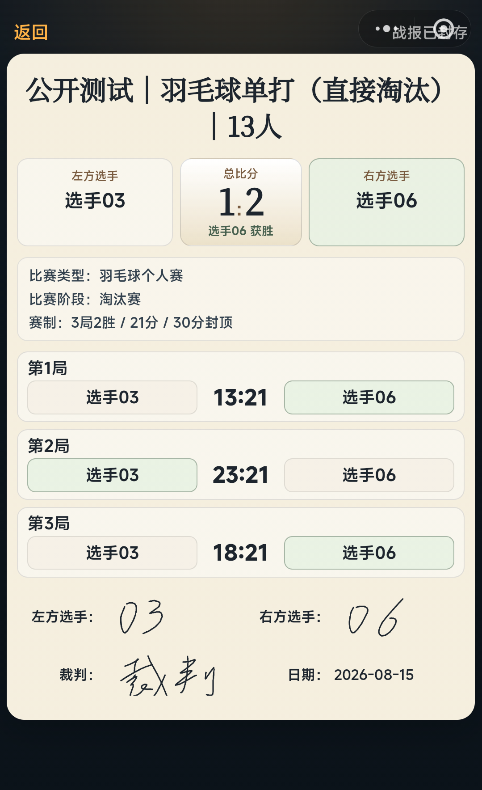

按行识别参赛单位
无论单打还是双打，系统都会将名单录入框中的每一行视为一个独立参赛单位。单打录入一名选手，双打可录入“张三/李四”，系统会在赛程、计分板和战报中将这一行作为完整组合展示。
支持种子排位
如需设置种子，只需在名字前加上序号，例如“1 张三”。系统生成淘汰赛签表或小组分组时，会识别种子顺序，用于轮空和分区安排，减少强选手过早相遇的情况。
羽毛球个人赛适合单打，也可以承载简单的双打组合。系统按“每一行名单”为一个参赛单位生成赛程、计分和战报，适用于校园赛、班级赛、院系赛和社团公开赛等以个人或搭档为单位的比赛。
无需提前拆分复杂的选手关系，创建赛事时按行录入名单即可。
无论单打还是双打，系统都会将名单录入框中的每一行视为一个独立参赛单位。单打录入一名选手，双打可录入“张三/李四”，系统会在赛程、计分板和战报中将这一行作为完整组合展示。
如需设置种子，只需在名字前加上序号，例如“1 张三”。系统生成淘汰赛签表或小组分组时，会识别种子顺序，用于轮空和分区安排，减少强选手过早相遇的情况。

在循环赛和小组赛阶段，个人赛使用独立排名模板。
可用指标包括胜场、净胜局、净胜分、得失分比和胜负关系等。
系统内置 BWF 官方排名规则模板，也提供常用模板。主办方也可以按办赛习惯调整指标优先级，例如“先看胜场，再看净胜局，最后看得失分比”。系统会按设置顺序生成积分排名。

比赛开始后，裁判可在移动端完成计分和比赛结算。
集中展示比赛状态：计分板展示双方姓名、大比分、当前比分、分数规则等。裁判可以完成加分、撤销、换边、退赛等操作。
换边和流程提示：当一局结束，或决胜局达到换边分数节点时，系统会给出提示，帮助裁判按规则推进比赛。
结算后自动更新结果：比赛结束后提交结算，系统保存胜负结果、各局比分和退赛信息。淘汰赛自动推进胜者晋级下一轮，小组赛自动更新排名。

比赛结束后生成电子战报，用于赛果确认和赛后留档。
战报展示赛事名称、比赛阶段、对阵双方、总比分和各局比分。
电子战报页面，选手和裁判可在屏幕上签名确认，由裁判封存后保持只读，避免赛后随意改动。
